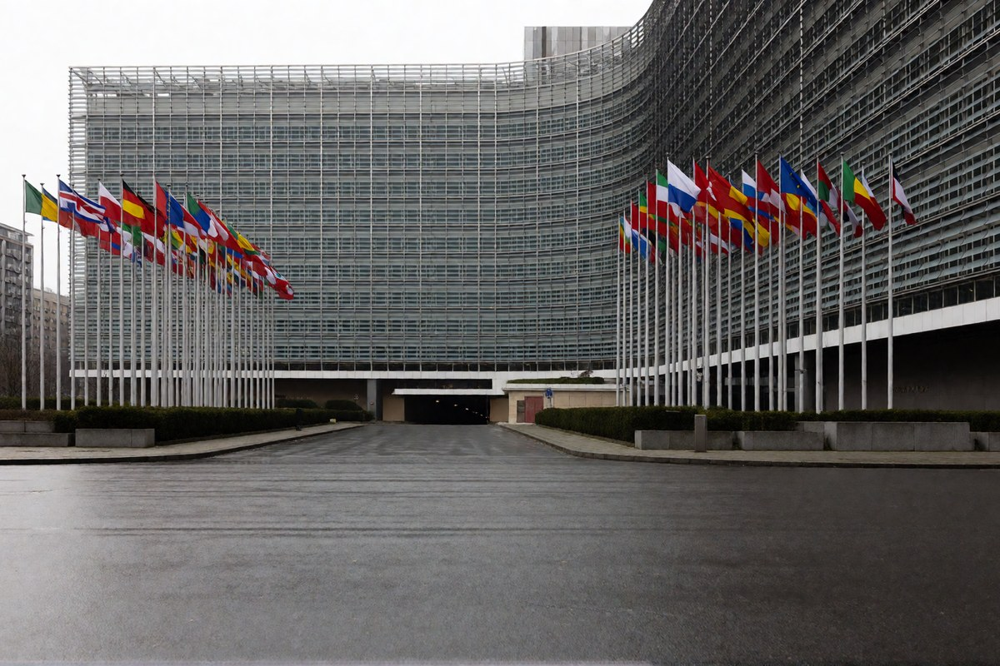

Politica italiana · 11 novembre 2026
Meloni, l'Europa e un campo largo che non parla con una voce sola
Un editoriale del Riformista sostiene che non esista più una politica interna separata da quella estera, e che l'opposizione non abbia una linea sul mondo. L'editoriale per gli abbonati, con il commento dell'autore.
di Franco Zanghì
Il 10 novembre 2026, a Bologna, Giorgia Meloni ha dovuto rispondere su una firma che mancava: quella del ministro dell'Economia, Giancarlo Giorgetti, sotto il tredicesimo pacchetto di aiuti militari all'Ucraina. «Non c'è la questione di una mancata firma», ha risposto: Giorgetti era all'Ecofin e avrebbe firmato al rientro.
Sembra una scenetta di palazzo. Per Claudio Velardi, sul Riformista del 15 ottobre 2026, è invece il punto.
La tesi
Velardi la ripete due volte perché sia chiara: non esiste più «una politica interna separata dalla politica estera». Le bollette, le fabbriche che consumano molta energia, quanto costa scaldare una casa: si decide nel Golfo, nei gasdotti, a Washington e a Pechino. Nessun governo, nemmeno quello che si definisce sovranista, può deciderlo da solo.

Da qui il passaggio sul governo: Meloni è arrivata a Palazzo Chigi da sovranista o quasi, scrive Velardi, e si è trovata a fare una politica prima europea e atlantica, poi soprattutto europea, dopo lo strappo pubblico con Donald Trump. «Meloni ha capito, tardi ma lo ha capito, che la politica interna si fa a Bruxelles e nel mondo».
Il commento
Su quel «tardi» si può dissentire con garbo. Per Meloni difendere l'interesse nazionale non ha mai voluto dire chiudersi in casa, ma sedersi al tavolo e contare: che oggi quel tavolo sia soprattutto europeo non è una conversione, è coerenza applicata al mondo com'è diventato. Resta che Velardi le riconosce la credibilità di governo, e su quel giornale non è poco.
L'altra metà
Sull'opposizione Velardi è severo: una politica globale non c'è. Il campo largo si spacca sull'Ucraina a ogni voto sugli aiuti, tiene insieme posizioni inconciliabili sul Medio Oriente e sull'energia ha un no a tutto che lo unisce e lo rende, scrive, inservibile. Potrà «anche vincere un'elezione per stanchezza altrui, mai per capacità propria».
Il ragionamento regge. Il Partito democratico di Elly Schlein sostiene Kiev ma si divide quando si parla di armi, il Movimento 5 Stelle di Giuseppe Conte contesta da tempo l'invio di armi, Alleanza Verdi e Sinistra punta su una pace tutta negoziale: sono tre linee, non una. Anche nella maggioranza la Lega di Matteo Salvini i suoi dubbi non li ha nascosti; la differenza è che a Palazzo Chigi la linea la tiene una persona sola, e a viso aperto.
Resta la domanda che l'editoriale lascia. Se la politica di casa si decide fuori dai confini, chi vuole governare l'Italia deve saper dire dove sta l'Italia nel mondo. Il centrodestra una risposta ce l'ha. Il campo largo, per ora, ne ha tre.
Fonti
- Il Riformista, Claudio Velardi, «La politica a viso aperto di Meloni e il vicolo cieco del campo largo tra Ucraina, energia e Medio Oriente», 15 ottobre 2026
- Sky TG24, «Aiuti a Kiev, Meloni: firma Giorgetti manca perché all'estero, nostra linea non cambia», 10 novembre 2026
Questo articolo è la versione scritta dell'editoriale riservato agli abbonati del canale Franco Zanghì, uscito l'11 novembre 2026. Le tesi attribuite a Claudio Velardi sono quelle del suo editoriale sul Riformista del 15 ottobre 2026; il commento è dell'autore.